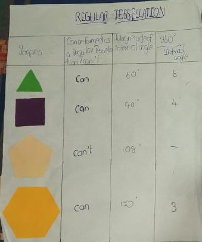
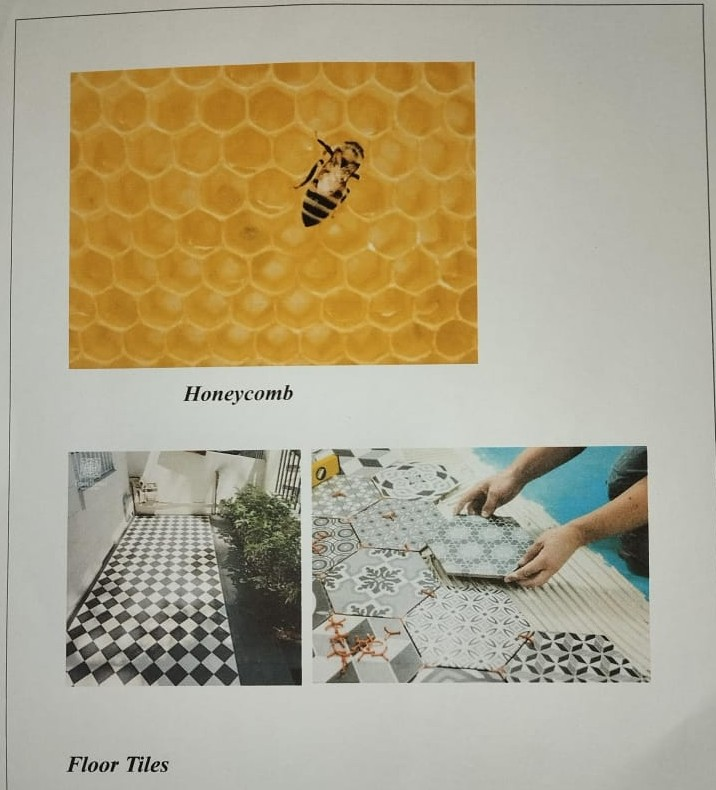

Which regular shapes tile a floor?
A honeycomb and floor tiles lead into a poster comparing four regular polygons.
Learning goal
Decide whether copies of a single regular polygon meet around a point without a gap.
What we did
I used photographs of honeycomb and floor tiles to introduce the question. Students recorded a decision and an interior angle beside each coloured shape on their posters.
Why I chose this sample
I selected this poster because the pentagon row interrupts a pattern. The group marked the 60° triangle, 90° square and 120° hexagon as shapes that fit. They marked the 108° regular pentagon as a shape that leaves a gap.
How I read the work
A full turn is 360°. Six equilateral triangles, four squares or three regular hexagons fill the turn. Three regular pentagons cover 324° and leave 36°. A convincing explanation accounts for that gap.
What I would change
The dash in the last cell of the pentagon row leaves the group’s reasoning open. Next time I would ask a pair to draw the 36° gap on the poster and invite another pair to check it.
Classroom evidence

